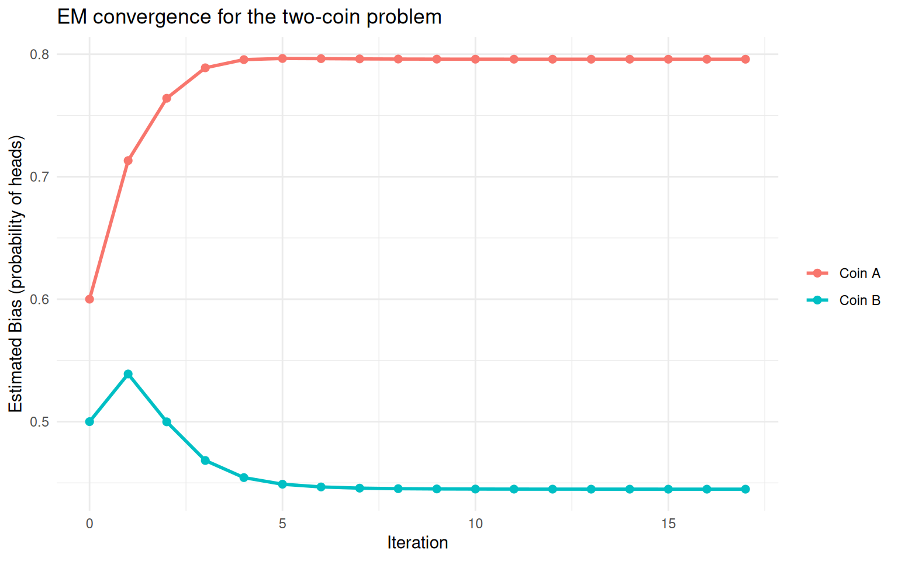
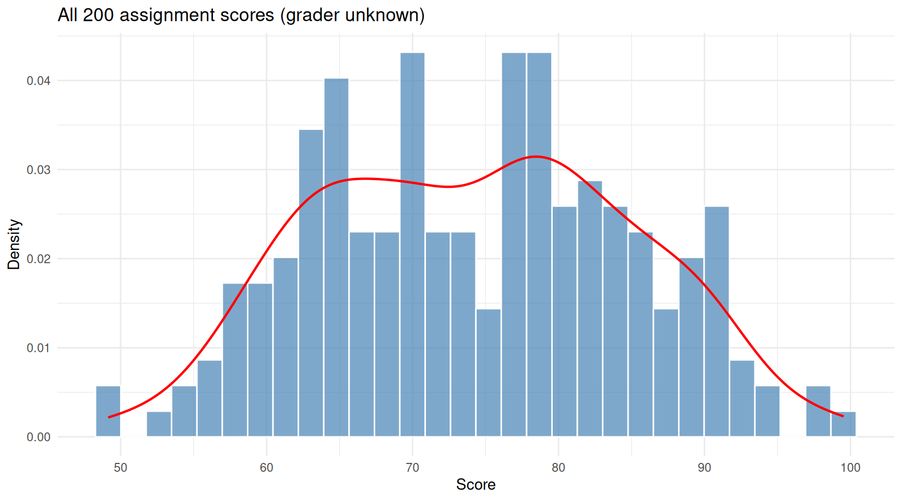
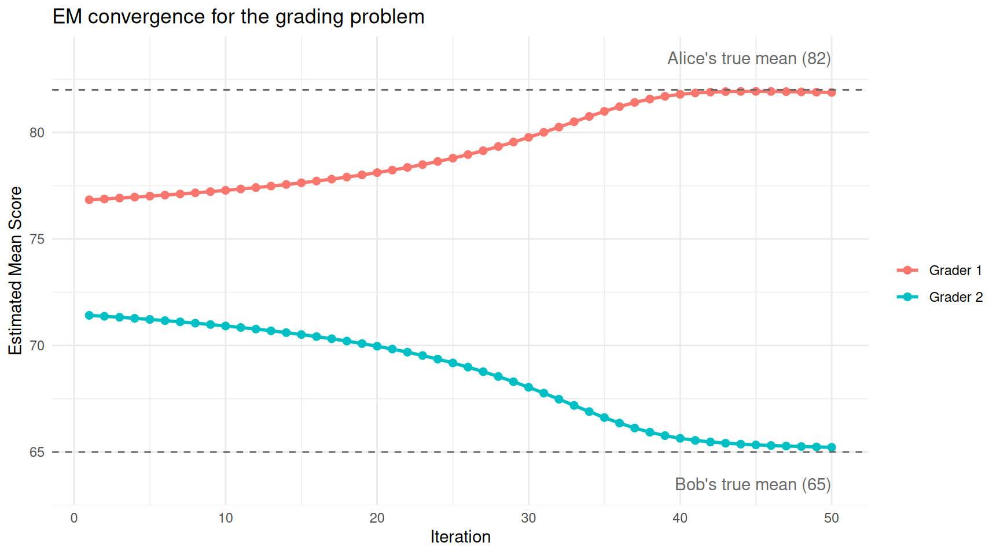
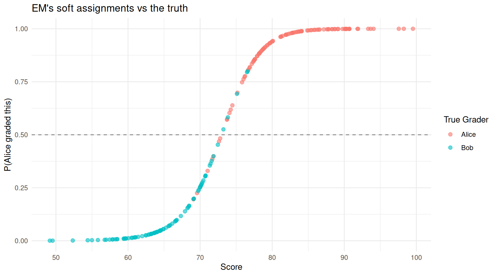
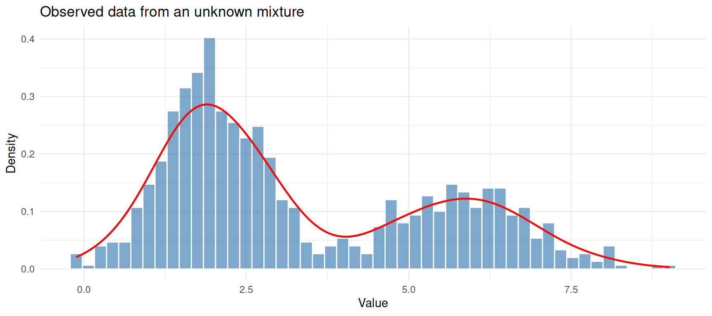
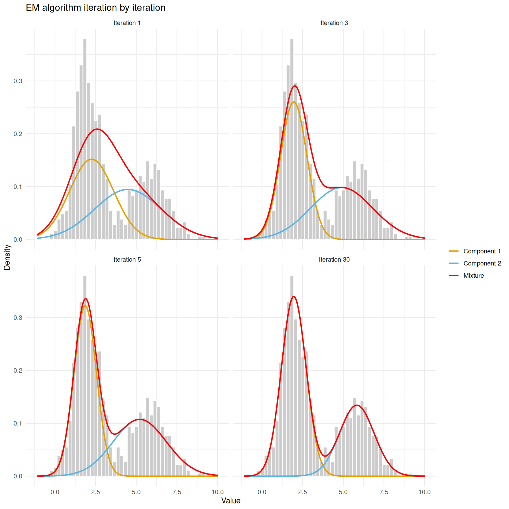
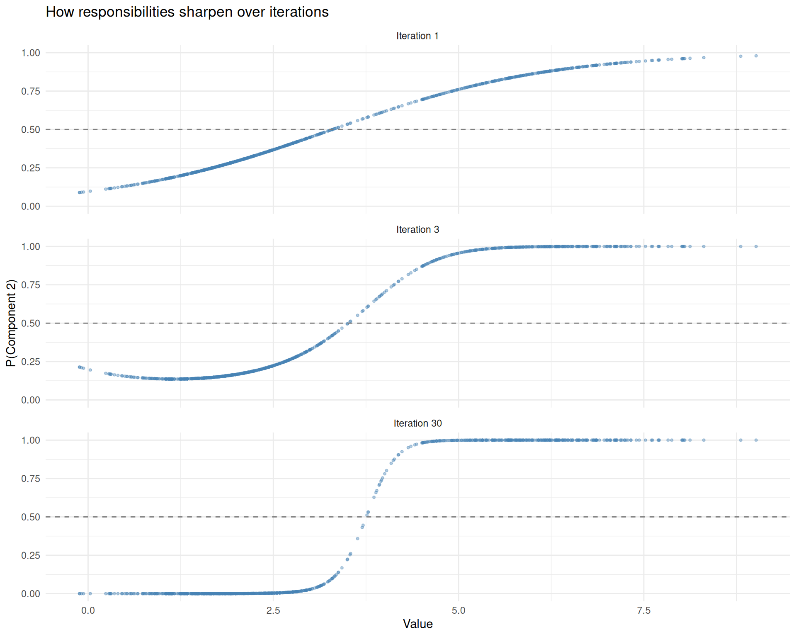
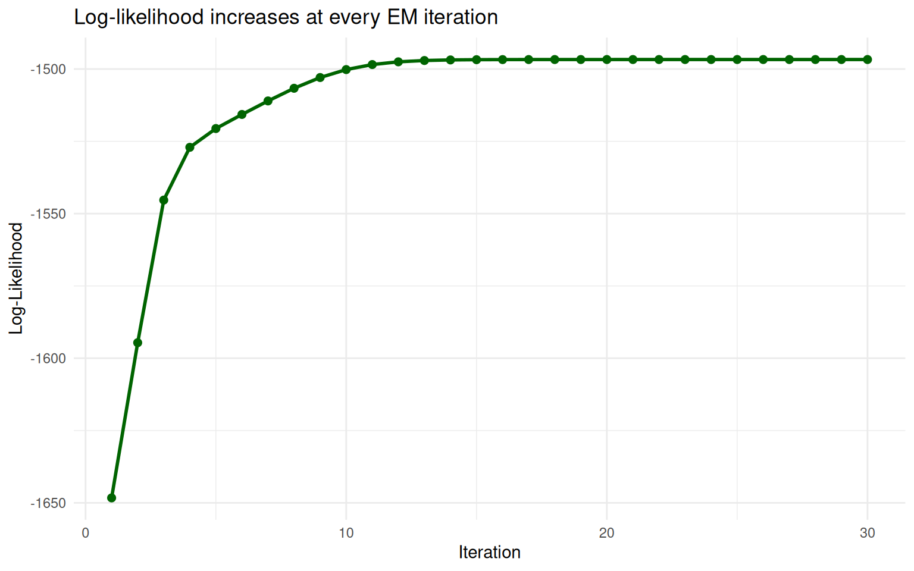
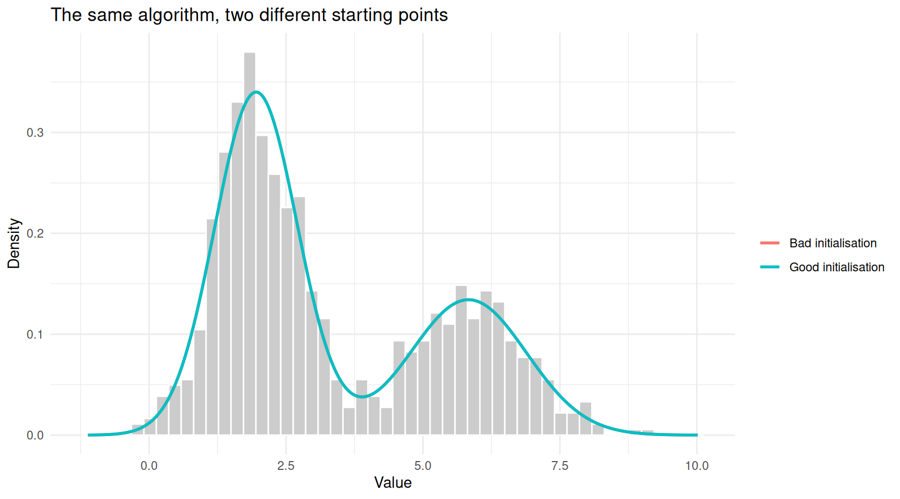

Last updated: 2026-03-23
Checks: 7 0
Knit directory: muse/
This reproducible R Markdown analysis was created with workflowr (version 1.7.2). The Checks tab describes the reproducibility checks that were applied when the results were created. The Past versions tab lists the development history.
Great! Since the R Markdown file has been committed to the Git repository, you know the exact version of the code that produced these results.
Great job! The global environment was empty. Objects defined in the global environment can affect the analysis in your R Markdown file in unknown ways. For reproduciblity it’s best to always run the code in an empty environment.
The command set.seed(20200712) was run prior to running
the code in the R Markdown file. Setting a seed ensures that any results
that rely on randomness, e.g. subsampling or permutations, are
reproducible.
Great job! Recording the operating system, R version, and package versions is critical for reproducibility.
Nice! There were no cached chunks for this analysis, so you can be confident that you successfully produced the results during this run.
Great job! Using relative paths to the files within your workflowr project makes it easier to run your code on other machines.
Great! You are using Git for version control. Tracking code development and connecting the code version to the results is critical for reproducibility.
The results in this page were generated with repository version 7753a73. See the Past versions tab to see a history of the changes made to the R Markdown and HTML files.
Note that you need to be careful to ensure that all relevant files for
the analysis have been committed to Git prior to generating the results
(you can use wflow_publish or
wflow_git_commit). workflowr only checks the R Markdown
file, but you know if there are other scripts or data files that it
depends on. Below is the status of the Git repository when the results
were generated:
Ignored files:
Ignored: .Rproj.user/
Ignored: data/1M_neurons_filtered_gene_bc_matrices_h5.h5
Ignored: data/293t/
Ignored: data/293t_3t3_filtered_gene_bc_matrices.tar.gz
Ignored: data/293t_filtered_gene_bc_matrices.tar.gz
Ignored: data/5k_Human_Donor1_PBMC_3p_gem-x_5k_Human_Donor1_PBMC_3p_gem-x_count_sample_filtered_feature_bc_matrix.h5
Ignored: data/5k_Human_Donor2_PBMC_3p_gem-x_5k_Human_Donor2_PBMC_3p_gem-x_count_sample_filtered_feature_bc_matrix.h5
Ignored: data/5k_Human_Donor3_PBMC_3p_gem-x_5k_Human_Donor3_PBMC_3p_gem-x_count_sample_filtered_feature_bc_matrix.h5
Ignored: data/5k_Human_Donor4_PBMC_3p_gem-x_5k_Human_Donor4_PBMC_3p_gem-x_count_sample_filtered_feature_bc_matrix.h5
Ignored: data/97516b79-8d08-46a6-b329-5d0a25b0be98.h5ad
Ignored: data/Parent_SC3v3_Human_Glioblastoma_filtered_feature_bc_matrix.tar.gz
Ignored: data/brain_counts/
Ignored: data/cl.obo
Ignored: data/cl.owl
Ignored: data/jurkat/
Ignored: data/jurkat:293t_50:50_filtered_gene_bc_matrices.tar.gz
Ignored: data/jurkat_293t/
Ignored: data/jurkat_filtered_gene_bc_matrices.tar.gz
Ignored: data/pbmc20k/
Ignored: data/pbmc20k_seurat/
Ignored: data/pbmc3k.csv
Ignored: data/pbmc3k.csv.gz
Ignored: data/pbmc3k.h5ad
Ignored: data/pbmc3k/
Ignored: data/pbmc3k_bpcells_mat/
Ignored: data/pbmc3k_export.mtx
Ignored: data/pbmc3k_matrix.mtx
Ignored: data/pbmc3k_seurat.rds
Ignored: data/pbmc4k_filtered_gene_bc_matrices.tar.gz
Ignored: data/pbmc_1k_v3_filtered_feature_bc_matrix.h5
Ignored: data/pbmc_1k_v3_raw_feature_bc_matrix.h5
Ignored: data/refdata-gex-GRCh38-2020-A.tar.gz
Ignored: data/seurat_1m_neuron.rds
Ignored: data/t_3k_filtered_gene_bc_matrices.tar.gz
Ignored: r_packages_4.5.2/
Untracked files:
Untracked: .claude/
Untracked: CLAUDE.md
Untracked: analysis/.claude/
Untracked: analysis/aucc.Rmd
Untracked: analysis/bimodal.Rmd
Untracked: analysis/bioc.Rmd
Untracked: analysis/bioc_scrnaseq.Rmd
Untracked: analysis/chick_weight.Rmd
Untracked: analysis/likelihood.Rmd
Untracked: analysis/modelling.Rmd
Untracked: analysis/wordpress_readability.Rmd
Untracked: bpcells_matrix/
Untracked: data/Caenorhabditis_elegans.WBcel235.113.gtf.gz
Untracked: data/GCF_043380555.1-RS_2024_12_gene_ontology.gaf.gz
Untracked: data/SeuratObj.rds
Untracked: data/arab.rds
Untracked: data/astronomicalunit.csv
Untracked: data/davetang039sblog.WordPress.2026-02-12.xml
Untracked: data/femaleMiceWeights.csv
Untracked: data/lung_bcell.rds
Untracked: m3/
Untracked: women.json
Unstaged changes:
Modified: analysis/isoform_switch_analyzer.Rmd
Modified: analysis/linear_models.Rmd
Note that any generated files, e.g. HTML, png, CSS, etc., are not included in this status report because it is ok for generated content to have uncommitted changes.
These are the previous versions of the repository in which changes were
made to the R Markdown (analysis/em.Rmd) and HTML
(docs/em.html) files. If you’ve configured a remote Git
repository (see ?wflow_git_remote), click on the hyperlinks
in the table below to view the files as they were in that past version.
| File | Version | Author | Date | Message |
|---|---|---|---|---|
| Rmd | 7753a73 | Dave Tang | 2026-03-23 | Grading example made concrete |
| html | ab2ee65 | Dave Tang | 2026-03-23 | Build site. |
| Rmd | 15275c4 | Dave Tang | 2026-03-23 | The EM algorithm |
library(ggplot2)The Expectation-Maximisation (EM) algorithm is one of the most widely used tools in statistics and machine learning. It shows up in Gaussian mixture models, hidden Markov models, missing-data problems, and many other settings. But most explanations of EM jump into abstract notation very quickly, which makes it feel more complicated than it actually is.
The core idea is simple. EM is for situations where you are trying to estimate something, but there is hidden information that, if you knew it, would make the problem easy. Since you don’t know the hidden information, you alternate between:
Repeat until things stabilise. That’s it. The rest of this article is about building solid intuition for what this means and why it works.
Imagine you are a teacher with two teaching assistants, Alice and Bob, who grade homework. You receive a stack of graded assignments but their names have fallen off — you can see the scores each student received, but you do not know which TA graded which assignment.
You want to figure out each TA’s grading tendency (say, the average score they give). If you knew who graded each assignment, this would be trivial: split the assignments into two piles and compute the average for each pile.
But you don’t know who graded what. So you do the following:
That is the EM algorithm. The hidden information is “who graded what”, and the parameters are the grading averages.
The classic teaching example for EM involves two coins. This problem is small enough to work through by hand, which makes the mechanics completely transparent.
You have two coins, A and B, with unknown probabilities of landing heads:
Someone runs 5 rounds of an experiment. In each round, they secretly pick one of the two coins (you don’t know which), flip it 10 times, and tell you how many heads came up. Your job: estimate \(\theta_A\) and \(\theta_B\).
Here are the results:
| Round | Heads (out of 10) | Coin used (hidden) |
|---|---|---|
| 1 | 7 | ? |
| 2 | 3 | ? |
| 3 | 8 | ? |
| 4 | 5 | ? |
| 5 | 9 | ? |
If we knew the hidden column, we could just compute the proportion of heads for each coin. Since we don’t, we use EM.
set.seed(1984)
# Observed data: number of heads in each round (10 flips per round)
heads <- c(7, 3, 8, 5, 9)
n_flips <- 10
n_rounds <- length(heads)We need a starting point. Let’s guess \(\theta_A = 0.6\) and \(\theta_B = 0.5\).
# EM for the two-coin problem
em_two_coins <- function(heads, n_flips, theta_A_init, theta_B_init,
max_iter = 20, tol = 1e-6) {
theta_A <- theta_A_init
theta_B <- theta_B_init
n_rounds <- length(heads)
history <- data.frame(
iteration = integer(),
theta_A = numeric(),
theta_B = numeric()
)
history <- rbind(history, data.frame(
iteration = 0, theta_A = theta_A, theta_B = theta_B
))
for (iter in seq_len(max_iter)) {
# --- E-step ---
# For each round, compute the probability that coin A was used
# P(coin A | data) is proportional to P(data | coin A) * P(coin A)
# Assume equal prior: P(coin A) = P(coin B) = 0.5
# Likelihood of observing the data under each coin (binomial)
lik_A <- dbinom(heads, size = n_flips, prob = theta_A)
lik_B <- dbinom(heads, size = n_flips, prob = theta_B)
# Responsibility: probability that coin A generated each round
resp_A <- lik_A / (lik_A + lik_B)
resp_B <- 1 - resp_A
# --- M-step ---
# Update theta_A: weighted average of head proportions, weighted by resp_A
theta_A_new <- sum(resp_A * heads) / sum(resp_A * n_flips)
theta_B_new <- sum(resp_B * heads) / sum(resp_B * n_flips)
history <- rbind(history, data.frame(
iteration = iter, theta_A = theta_A_new, theta_B = theta_B_new
))
# Check convergence
if (abs(theta_A_new - theta_A) < tol && abs(theta_B_new - theta_B) < tol) {
theta_A <- theta_A_new
theta_B <- theta_B_new
break
}
theta_A <- theta_A_new
theta_B <- theta_B_new
}
list(
theta_A = theta_A,
theta_B = theta_B,
iterations = iter,
history = history
)
}
result <- em_two_coins(heads, n_flips,
theta_A_init = 0.6, theta_B_init = 0.5)
cat(sprintf("Converged in %d iterations\n", result$iterations))Converged in 17 iterationscat(sprintf(" theta_A = %.4f\n", result$theta_A)) theta_A = 0.7959cat(sprintf(" theta_B = %.4f\n", result$theta_B)) theta_B = 0.4449Let’s look at the first few iterations in detail to see the E-step and M-step playing out.
# Show detailed E-step and M-step for the first 3 iterations
theta_A <- 0.6
theta_B <- 0.5
for (iter in 1:3) {
cat(sprintf("=== Iteration %d ===\n", iter))
cat(sprintf("Current guesses: theta_A = %.4f, theta_B = %.4f\n\n", theta_A, theta_B))
lik_A <- dbinom(heads, size = n_flips, prob = theta_A)
lik_B <- dbinom(heads, size = n_flips, prob = theta_B)
resp_A <- lik_A / (lik_A + lik_B)
cat("E-step — responsibility of coin A for each round:\n")
for (i in seq_along(heads)) {
cat(sprintf(" Round %d (%d heads): P(coin A) = %.3f, P(coin B) = %.3f\n",
i, heads[i], resp_A[i], 1 - resp_A[i]))
}
theta_A <- sum(resp_A * heads) / sum(resp_A * n_flips)
theta_B <- sum((1 - resp_A) * heads) / sum((1 - resp_A) * n_flips)
cat(sprintf("\nM-step — updated estimates: theta_A = %.4f, theta_B = %.4f\n\n", theta_A, theta_B))
}=== Iteration 1 ===
Current guesses: theta_A = 0.6000, theta_B = 0.5000
E-step — responsibility of coin A for each round:
Round 1 (7 heads): P(coin A) = 0.647, P(coin B) = 0.353
Round 2 (3 heads): P(coin A) = 0.266, P(coin B) = 0.734
Round 3 (8 heads): P(coin A) = 0.733, P(coin B) = 0.267
Round 4 (5 heads): P(coin A) = 0.449, P(coin B) = 0.551
Round 5 (9 heads): P(coin A) = 0.805, P(coin B) = 0.195
M-step — updated estimates: theta_A = 0.7131, theta_B = 0.5389
=== Iteration 2 ===
Current guesses: theta_A = 0.7131, theta_B = 0.5389
E-step — responsibility of coin A for each round:
Round 1 (7 heads): P(coin A) = 0.631, P(coin B) = 0.369
Round 2 (3 heads): P(coin A) = 0.077, P(coin B) = 0.923
Round 3 (8 heads): P(coin A) = 0.784, P(coin B) = 0.216
Round 4 (5 heads): P(coin A) = 0.274, P(coin B) = 0.726
Round 5 (9 heads): P(coin A) = 0.886, P(coin B) = 0.114
M-step — updated estimates: theta_A = 0.7640, theta_B = 0.4999
=== Iteration 3 ===
Current guesses: theta_A = 0.7640, theta_B = 0.4999
E-step — responsibility of coin A for each round:
Round 1 (7 heads): P(coin A) = 0.672, P(coin B) = 0.328
Round 2 (3 heads): P(coin A) = 0.018, P(coin B) = 0.982
Round 3 (8 heads): P(coin A) = 0.869, P(coin B) = 0.131
Round 4 (5 heads): P(coin A) = 0.163, P(coin B) = 0.837
Round 5 (9 heads): P(coin A) = 0.956, P(coin B) = 0.044
M-step — updated estimates: theta_A = 0.7889, theta_B = 0.4683Notice how the responsibilities shift over iterations. In the beginning, the guesses are close together so the model is unsure which coin generated which round. As the estimates improve, the model becomes more confident: rounds with many heads are assigned more strongly to the higher-probability coin and vice versa.
history_long <- data.frame(
iteration = rep(result$history$iteration, 2),
theta = c(result$history$theta_A, result$history$theta_B),
coin = rep(c("Coin A", "Coin B"), each = nrow(result$history))
)
ggplot(history_long, aes(x = iteration, y = theta, colour = coin)) +
geom_line(linewidth = 1) +
geom_point(size = 2) +
labs(x = "Iteration", y = "Estimated Bias (probability of heads)",
colour = "", title = "EM convergence for the two-coin problem") +
theme_minimal()
Convergence of coin bias estimates across EM iterations.
| Version | Author | Date |
|---|---|---|
| ab2ee65 | Dave Tang | 2026-03-23 |
The two estimates start close together and gradually separate as the algorithm figures out which rounds go with which coin.
Earlier we described a teacher trying to figure out whether Alice or Bob graded each assignment, given only the scores. Let’s turn that analogy into a full worked example with simulated data.
Alice is a generous grader — her scores tend to cluster around 82 with some spread. Bob is stricter — his scores cluster around 65. Over the semester, they graded 200 assignments between them (Alice graded about 55%, Bob about 45%). Unfortunately the TA names fell off, so all we have is a pile of 200 scores.
set.seed(1984)
n_alice <- 110
n_bob <- 90
alice_scores <- rnorm(n_alice, mean = 82, sd = 7)
bob_scores <- rnorm(n_bob, mean = 65, sd = 6)
# What we observe: a single pile of scores with no labels
scores <- c(alice_scores, bob_scores)
true_grader <- c(rep("Alice", n_alice), rep("Bob", n_bob))ggplot(data.frame(score = scores), aes(x = score)) +
geom_histogram(aes(y = after_stat(density)), bins = 30,
fill = "steelblue", colour = "white", alpha = 0.7) +
geom_density(colour = "red", linewidth = 0.8) +
labs(x = "Score", y = "Density",
title = "All 200 assignment scores (grader unknown)") +
theme_minimal()
The pile of 200 scores. Two overlapping humps hint at two graders, but we don’t know who graded what.
The histogram shows a hint of two humps. EM will try to recover the two grading distributions.
The parameters we want to estimate are:
We start with a rough guess: grader 1 averages around 75 and grader 2 averages around 70 — intentionally mediocre starting values.
em_grading <- function(scores, max_iter = 50, tol = 1e-6) {
n <- length(scores)
# Initial guesses (deliberately rough)
mu <- c(75, 70)
sigma <- c(10, 10)
pi_k <- c(0.5, 0.5)
history <- list()
for (iter in seq_len(max_iter)) {
# E-step: for each score, how likely is it from grader 1 vs grader 2?
lik_1 <- pi_k[1] * dnorm(scores, mean = mu[1], sd = sigma[1])
lik_2 <- pi_k[2] * dnorm(scores, mean = mu[2], sd = sigma[2])
resp_1 <- lik_1 / (lik_1 + lik_2)
resp_2 <- 1 - resp_1
# M-step: re-estimate parameters using responsibilities as weights
N_1 <- sum(resp_1)
N_2 <- sum(resp_2)
mu_new <- c(sum(resp_1 * scores) / N_1,
sum(resp_2 * scores) / N_2)
sigma_new <- c(sqrt(sum(resp_1 * (scores - mu_new[1])^2) / N_1),
sqrt(sum(resp_2 * (scores - mu_new[2])^2) / N_2))
pi_new <- c(N_1 / n, N_2 / n)
history[[iter]] <- data.frame(
iteration = iter,
grader = c("Grader 1", "Grader 2"),
mu = mu_new,
sigma = sigma_new,
weight = pi_new
)
if (max(abs(mu_new - mu)) < tol) break
mu <- mu_new
sigma <- sigma_new
pi_k <- pi_new
}
list(mu = mu_new, sigma = sigma_new, pi_k = pi_new,
resp_1 = resp_1, history = do.call(rbind, history),
iterations = iter)
}
fit_grade <- em_grading(scores)
cat(sprintf("Converged in %d iterations\n\n", fit_grade$iterations))Converged in 50 iterationscat("Estimated parameters:\n")Estimated parameters:cat(sprintf(" Grader 1: mean = %.1f, sd = %.1f, proportion = %.0f%%\n",
fit_grade$mu[1], fit_grade$sigma[1], fit_grade$pi_k[1] * 100)) Grader 1: mean = 81.9, sd = 7.1, proportion = 54%cat(sprintf(" Grader 2: mean = %.1f, sd = %.1f, proportion = %.0f%%\n",
fit_grade$mu[2], fit_grade$sigma[2], fit_grade$pi_k[2] * 100)) Grader 2: mean = 65.2, sd = 6.3, proportion = 46%cat("\nTrue parameters:\n")
True parameters:cat(sprintf(" Alice: mean = 82.0, sd = 7.0, proportion = 55%%\n")) Alice: mean = 82.0, sd = 7.0, proportion = 55%cat(sprintf(" Bob: mean = 65.0, sd = 6.0, proportion = 45%%\n")) Bob: mean = 65.0, sd = 6.0, proportion = 45%EM recovers values close to the truth, despite starting with guesses that were well off.
ggplot(fit_grade$history, aes(x = iteration, y = mu, colour = grader)) +
geom_line(linewidth = 1) +
geom_point(size = 2) +
geom_hline(yintercept = 82, linetype = "dashed", colour = "grey40") +
geom_hline(yintercept = 65, linetype = "dashed", colour = "grey40") +
annotate("text", x = max(fit_grade$history$iteration), y = 83.5,
label = "Alice's true mean (82)", hjust = 1, colour = "grey40") +
annotate("text", x = max(fit_grade$history$iteration), y = 63.5,
label = "Bob's true mean (65)", hjust = 1, colour = "grey40") +
labs(x = "Iteration", y = "Estimated Mean Score",
colour = "", title = "EM convergence for the grading problem") +
theme_minimal()
The estimated grading averages converge from the initial guesses (75 and 70) toward the true values.
The two estimates start close together (75 and 70) and separate rapidly as EM figures out the two grading styles.
After convergence, each assignment has a responsibility — the probability that grader 1 (Alice) gave that score. Let’s look at a few assignments to see how EM reasons about them.
# Pick a few illustrative assignments
examples <- c(
which.max(scores), # highest score
which.min(scores), # lowest score
which.min(abs(scores - mean(scores))) # most ambiguous (near overall mean)
)
cat("How EM assigns individual assignments:\n\n")How EM assigns individual assignments:for (i in examples) {
cat(sprintf(
" Score = %.1f → P(Alice) = %.1f%%, P(Bob) = %.1f%% [truly graded by %s]\n",
scores[i],
fit_grade$resp_1[i] * 100,
(1 - fit_grade$resp_1[i]) * 100,
true_grader[i]
))
} Score = 99.5 → P(Alice) = 100.0%, P(Bob) = 0.0% [truly graded by Alice]
Score = 49.1 → P(Alice) = 0.1%, P(Bob) = 99.9% [truly graded by Bob]
Score = 74.2 → P(Alice) = 61.9%, P(Bob) = 38.1% [truly graded by Alice]High scores are confidently assigned to Alice (the generous grader), low scores to Bob (the strict grader), and middle scores are genuinely ambiguous.
df_assign <- data.frame(
score = scores,
p_alice = fit_grade$resp_1,
true_grader = true_grader
)
ggplot(df_assign, aes(x = score, y = p_alice, colour = true_grader)) +
geom_point(alpha = 0.6, size = 2) +
geom_hline(yintercept = 0.5, linetype = "dashed", colour = "grey50") +
labs(x = "Score", y = "P(Alice graded this)",
colour = "True Grader",
title = "EM's soft assignments vs the truth") +
theme_minimal()
Each assignment coloured by EM’s confidence that Alice graded it. Scores in the overlap region (around 70-75) are genuinely uncertain.
Points above the dashed line are assigned to Alice; points below to Bob. The colour shows the truth. Most assignments are classified correctly, with mistakes concentrated in the overlap region where the two graders’ score distributions blend together — exactly where you would expect genuine uncertainty.
If we assign each paper to whichever grader has the higher responsibility, how often do we get it right?
hard_assignment <- ifelse(fit_grade$resp_1 > 0.5, "Alice", "Bob")
accuracy <- mean(hard_assignment == true_grader)
cat(sprintf("Classification accuracy: %.1f%%\n", accuracy * 100))Classification accuracy: 93.0%cat("\nConfusion matrix:\n")
Confusion matrix:print(table(Predicted = hard_assignment, True = true_grader)) True
Predicted Alice Bob
Alice 101 5
Bob 9 85The errors are concentrated among scores in the 70–78 range where Alice’s low scores and Bob’s high scores overlap. No method can perfectly separate those, because the data genuinely looks the same regardless of which grader produced it.
The two-coin problem illustrates the logic of EM in a discrete setting. The same logic applies to continuous data. The most common application is fitting Gaussian mixture models (GMMs), where you assume your data comes from a blend of several normal (bell-curve) distributions and you want to recover their parameters.
For a detailed treatment of GMMs, see the Gaussian mixture model article. Here we focus on the EM mechanics.
set.seed(1984)
# Two-component Gaussian mixture
n <- 800
n1 <- round(n * 0.65)
n2 <- n - n1
x <- c(rnorm(n1, mean = 2, sd = 0.8),
rnorm(n2, mean = 6, sd = 1.0))
true_labels <- c(rep(1, n1), rep(2, n2))ggplot(data.frame(x = x), aes(x = x)) +
geom_histogram(aes(y = after_stat(density)), bins = 50,
fill = "steelblue", colour = "white", alpha = 0.7) +
geom_density(colour = "red", linewidth = 0.8) +
labs(x = "Value", y = "Density",
title = "Observed data from an unknown mixture") +
theme_minimal()
Simulated data from two overlapping Gaussian components.
| Version | Author | Date |
|---|---|---|
| ab2ee65 | Dave Tang | 2026-03-23 |
We know this data was generated by two Gaussians, but we will pretend we don’t and let EM figure it out.
To see exactly what EM is doing, we’ll record the state at each iteration and plot it.
em_gaussian <- function(x, K = 2, max_iter = 30, tol = 1e-6) {
n <- length(x)
# Initialise: spread means across the data range
mu <- quantile(x, probs = seq(0.3, 0.7, length.out = K))
sigma <- rep(sd(x), K)
pi_k <- rep(1 / K, K)
snapshots <- list()
for (iter in seq_len(max_iter)) {
# E-step
resp <- matrix(0, nrow = n, ncol = K)
for (k in seq_len(K)) {
resp[, k] <- pi_k[k] * dnorm(x, mean = mu[k], sd = sigma[k])
}
resp <- resp / rowSums(resp)
# M-step
N_k <- colSums(resp)
mu_new <- colSums(resp * x) / N_k
sigma_new <- sqrt(colSums(resp * outer(x, mu_new, "-")^2) / N_k)
pi_new <- N_k / n
# Record snapshot
snapshots[[iter]] <- list(
iter = iter, mu = mu_new, sigma = sigma_new,
pi_k = pi_new, resp = resp
)
if (max(abs(mu_new - mu)) < tol) break
mu <- mu_new
sigma <- sigma_new
pi_k <- pi_new
}
list(mu = mu_new, sigma = sigma_new, pi_k = pi_new,
resp = resp, snapshots = snapshots, iterations = iter)
}
fit <- em_gaussian(x, K = 2)
cat(sprintf("Converged in %d iterations\n\n", fit$iterations))Converged in 30 iterationscat(sprintf("Component 1: mean = %.2f, sd = %.2f, weight = %.2f\n",
fit$mu[1], fit$sigma[1], fit$pi_k[1]))Component 1: mean = 1.95, sd = 0.76, weight = 0.64cat(sprintf("Component 2: mean = %.2f, sd = %.2f, weight = %.2f\n",
fit$mu[2], fit$sigma[2], fit$pi_k[2]))Component 2: mean = 5.83, sd = 1.06, weight = 0.36# Select a few iterations to visualise
show_iters <- c(1, 3, 5, fit$iterations)
show_iters <- unique(pmin(show_iters, fit$iterations))
x_grid <- seq(min(x) - 1, max(x) + 1, length.out = 500)
plot_data <- do.call(rbind, lapply(show_iters, function(i) {
s <- fit$snapshots[[i]]
data.frame(
x = rep(x_grid, 3),
density = c(
s$pi_k[1] * dnorm(x_grid, s$mu[1], s$sigma[1]),
s$pi_k[2] * dnorm(x_grid, s$mu[2], s$sigma[2]),
s$pi_k[1] * dnorm(x_grid, s$mu[1], s$sigma[1]) +
s$pi_k[2] * dnorm(x_grid, s$mu[2], s$sigma[2])
),
curve = rep(c("Component 1", "Component 2", "Mixture"), each = length(x_grid)),
iteration = paste("Iteration", i)
)
}))
plot_data$iteration <- factor(plot_data$iteration,
levels = paste("Iteration", show_iters))
ggplot() +
geom_histogram(data = data.frame(x = x), aes(x = x, y = after_stat(density)),
bins = 50, fill = "grey80", colour = "white") +
geom_line(data = plot_data, aes(x = x, y = density, colour = curve),
linewidth = 0.9) +
scale_colour_manual(values = c("Component 1" = "#E69F00",
"Component 2" = "#56B4E9",
"Mixture" = "red")) +
facet_wrap(~iteration, ncol = 2) +
labs(x = "Value", y = "Density", colour = "",
title = "EM algorithm iteration by iteration") +
theme_minimal()
EM at iterations 1, 3, 5, and after convergence. The two Gaussian components (orange and blue curves) gradually separate and fit the data.
| Version | Author | Date |
|---|---|---|
| ab2ee65 | Dave Tang | 2026-03-23 |
At iteration 1, the two components are poorly placed — they are too close together and too wide. By iteration 3, they have started to separate. By convergence, each component sits neatly over one of the two humps and the combined mixture (red) traces the overall shape of the data.
The E-step assigns each data point a responsibility (a probability between 0 and 1) for each component. Let’s see how these responsibilities sharpen over iterations.
resp_iters <- c(1, 3, fit$iterations)
resp_iters <- unique(pmin(resp_iters, fit$iterations))
resp_data <- do.call(rbind, lapply(resp_iters, function(i) {
data.frame(
x = x,
resp_2 = fit$snapshots[[i]]$resp[, 2],
iteration = paste("Iteration", i)
)
}))
resp_data$iteration <- factor(resp_data$iteration,
levels = paste("Iteration", resp_iters))
ggplot(resp_data, aes(x = x, y = resp_2)) +
geom_point(alpha = 0.4, size = 0.8, colour = "steelblue") +
geom_hline(yintercept = 0.5, linetype = "dashed", colour = "grey50") +
facet_wrap(~iteration, ncol = 1) +
labs(x = "Value", y = "P(Component 2)",
title = "How responsibilities sharpen over iterations") +
theme_minimal()
Responsibilities at different iterations. Early on (top), the model is uncertain about most points. By convergence (bottom), assignments are crisp except in the overlap region.
| Version | Author | Date |
|---|---|---|
| ab2ee65 | Dave Tang | 2026-03-23 |
The dashed line at 0.5 marks the decision boundary. Points above the line are assigned to component 2; points below to component 1. In early iterations, many points cluster near 0.5 (the model is uncertain). By convergence, most points are pushed close to 0 or 1, with only the overlap region retaining genuine ambiguity.
You might wonder: why does this iterative guessing game converge to a good answer instead of going in circles? There is a mathematical guarantee.
At each iteration, EM is guaranteed to increase (or at least not decrease) the log-likelihood of the data. The log-likelihood measures how well the current parameters explain the observed data. Think of it as a score: higher is better.
# Compute log-likelihood at each iteration
compute_ll <- function(x, mu, sigma, pi_k) {
K <- length(mu)
ll <- 0
for (i in seq_along(x)) {
p <- 0
for (k in seq_len(K)) {
p <- p + pi_k[k] * dnorm(x[i], mu[k], sigma[k])
}
ll <- ll + log(p)
}
ll
}
ll_values <- sapply(fit$snapshots, function(s) {
compute_ll(x, s$mu, s$sigma, s$pi_k)
})
df_ll <- data.frame(iteration = seq_along(ll_values), log_likelihood = ll_values)
ggplot(df_ll, aes(x = iteration, y = log_likelihood)) +
geom_line(linewidth = 1, colour = "darkgreen") +
geom_point(size = 2, colour = "darkgreen") +
labs(x = "Iteration", y = "Log-Likelihood",
title = "Log-likelihood increases at every EM iteration") +
theme_minimal()
The log-likelihood increases at every EM iteration and plateaus at convergence.
| Version | Author | Date |
|---|---|---|
| ab2ee65 | Dave Tang | 2026-03-23 |
The curve goes up steeply at first (big improvements) then levels off (fine-tuning). EM stops when the improvements become negligibly small.
One important caveat: EM is guaranteed to find a peak in the log-likelihood, but not necessarily the highest peak. The log-likelihood surface can have multiple peaks (local optima), and which one EM finds depends on where it starts.
This means initialisation matters. Let’s demonstrate this by running EM with two different starting points.
# Good initialisation
fit_good <- em_gaussian(x, K = 2)
# Force a bad initialisation by hacking the function
em_gaussian_custom <- function(x, mu_init, sigma_init, pi_init,
max_iter = 30, tol = 1e-6) {
n <- length(x)
K <- length(mu_init)
mu <- mu_init
sigma <- sigma_init
pi_k <- pi_init
for (iter in seq_len(max_iter)) {
resp <- matrix(0, nrow = n, ncol = K)
for (k in seq_len(K)) {
resp[, k] <- pi_k[k] * dnorm(x, mean = mu[k], sd = sigma[k])
}
resp <- resp / rowSums(resp)
N_k <- colSums(resp)
mu_new <- colSums(resp * x) / N_k
sigma_new <- sqrt(colSums(resp * outer(x, mu_new, "-")^2) / N_k)
pi_new <- N_k / n
if (max(abs(mu_new - mu)) < tol) break
mu <- mu_new
sigma <- sigma_new
pi_k <- pi_new
}
list(mu = mu_new, sigma = sigma_new, pi_k = pi_new)
}
# Bad initialisation: both means on the same side
fit_bad <- em_gaussian_custom(x,
mu_init = c(5.5, 6.5),
sigma_init = c(1, 1),
pi_init = c(0.5, 0.5)
)
# Plot both results
x_grid <- seq(min(x) - 1, max(x) + 1, length.out = 500)
df_good <- data.frame(
x = x_grid,
density = fit_good$pi_k[1] * dnorm(x_grid, fit_good$mu[1], fit_good$sigma[1]) +
fit_good$pi_k[2] * dnorm(x_grid, fit_good$mu[2], fit_good$sigma[2]),
init = "Good initialisation"
)
df_bad <- data.frame(
x = x_grid,
density = fit_bad$pi_k[1] * dnorm(x_grid, fit_bad$mu[1], fit_bad$sigma[1]) +
fit_bad$pi_k[2] * dnorm(x_grid, fit_bad$mu[2], fit_bad$sigma[2]),
init = "Bad initialisation"
)
df_inits <- rbind(df_good, df_bad)
ggplot() +
geom_histogram(data = data.frame(x = x), aes(x = x, y = after_stat(density)),
bins = 50, fill = "grey80", colour = "white") +
geom_line(data = df_inits, aes(x = x, y = density, colour = init),
linewidth = 1) +
labs(x = "Value", y = "Density", colour = "",
title = "The same algorithm, two different starting points") +
theme_minimal()
Different starting points can lead to different solutions. Here, a poor initialisation gets stuck.
| Version | Author | Date |
|---|---|---|
| ab2ee65 | Dave Tang | 2026-03-23 |
cat("Good initialisation:\n")Good initialisation:cat(sprintf(" Component 1: mean = %.2f, sd = %.2f\n", fit_good$mu[1], fit_good$sigma[1])) Component 1: mean = 1.95, sd = 0.76cat(sprintf(" Component 2: mean = %.2f, sd = %.2f\n\n", fit_good$mu[2], fit_good$sigma[2])) Component 2: mean = 5.83, sd = 1.06cat("Bad initialisation:\n")Bad initialisation:cat(sprintf(" Component 1: mean = %.2f, sd = %.2f\n", fit_bad$mu[1], fit_bad$sigma[1])) Component 1: mean = 1.95, sd = 0.76cat(sprintf(" Component 2: mean = %.2f, sd = %.2f\n", fit_bad$mu[2], fit_bad$sigma[2])) Component 2: mean = 5.83, sd = 1.06In practice, the standard defence against local optima is to run EM
multiple times with different random starting points and keep the result
with the highest log-likelihood. Packages like mclust in R
do this automatically.
EM always follows the same template, regardless of the specific model:
| Step | What you do | Two-coin example | Grading example | Gaussian mixture |
|---|---|---|---|---|
| Hidden data | Identify what is unobserved | Which coin was used in each round | Which TA graded each assignment | Which component generated each data point |
| Initialise | Make an initial guess for the parameters | \(\theta_A = 0.6\), \(\theta_B = 0.5\) | Mean scores of 75 and 70 | Means, SDs, and weights |
| E-step | Compute the expected value of the hidden data, given current parameters | P(coin A | round data) for each round | P(Alice | score) for each assignment | P(component \(k\) | data point) for each point |
| M-step | Re-estimate parameters, treating the expected hidden data as if it were real | Weighted proportion of heads for each coin | Weighted mean score for each TA | Weighted mean, SD, and proportion for each component |
| Repeat | Until parameters stop changing | — | — | — |
The beauty of EM is that both the E-step and the M-step are usually easy problems on their own. The E-step is just plugging numbers into a formula. The M-step is often a familiar calculation (like computing a mean). It is only the combination — the fact that you don’t know the hidden data — that makes the original problem hard. EM turns one hard problem into a sequence of easy ones.
EM assumes you already know the number of components \(K\). In the two-coin problem, we knew there were 2 coins. In practice, you may not know \(K\). Common approaches:
mclust does in R.EM can be slow when components overlap heavily. In such cases, the responsibilities stay uncertain for many iterations, and the parameters update by tiny amounts. This is usually not a problem in practice (modern computers handle thousands of iterations quickly), but it is worth knowing.
If a Gaussian component collapses onto a single data point (mean equals that point, standard deviation shrinks to zero), the likelihood goes to infinity. This is a degenerate solution. Well-implemented packages guard against this by adding small regularisation terms or using constrained covariance structures.
| Concept | Plain-language meaning |
|---|---|
| EM algorithm | An iterative method for estimating parameters when there is hidden (unobserved) information |
| E-step | “Given my current guesses, how should I fill in the blanks?” — compute soft assignments of hidden variables |
| M-step | “Given the filled-in blanks, what are the best parameter estimates?” — update parameters using standard formulas |
| Responsibility | The probability that a particular hidden state generated a particular data point |
| Log-likelihood | A score that measures how well the current parameters explain the data; EM never decreases it |
| Local optimum | EM finds a peak, but not necessarily the highest peak; run it multiple times with different starting points |
| Convergence | When the parameter updates become negligibly small, the algorithm stops |
The EM algorithm is not magic. It is a disciplined way of handling the chicken-and-egg problem that arises whenever you have incomplete data. Once you see it as “guess the hidden stuff, update your parameters, repeat”, the notation in textbooks becomes much less intimidating.
sessionInfo()R version 4.5.2 (2025-10-31)
Platform: x86_64-pc-linux-gnu
Running under: Ubuntu 24.04.4 LTS
Matrix products: default
BLAS: /usr/lib/x86_64-linux-gnu/openblas-pthread/libblas.so.3
LAPACK: /usr/lib/x86_64-linux-gnu/openblas-pthread/libopenblasp-r0.3.26.so; LAPACK version 3.12.0
locale:
[1] LC_CTYPE=en_US.UTF-8 LC_NUMERIC=C
[3] LC_TIME=en_US.UTF-8 LC_COLLATE=en_US.UTF-8
[5] LC_MONETARY=en_US.UTF-8 LC_MESSAGES=en_US.UTF-8
[7] LC_PAPER=en_US.UTF-8 LC_NAME=C
[9] LC_ADDRESS=C LC_TELEPHONE=C
[11] LC_MEASUREMENT=en_US.UTF-8 LC_IDENTIFICATION=C
time zone: Etc/UTC
tzcode source: system (glibc)
attached base packages:
[1] stats graphics grDevices utils datasets methods base
other attached packages:
[1] ggplot2_4.0.2 workflowr_1.7.2
loaded via a namespace (and not attached):
[1] gtable_0.3.6 jsonlite_2.0.0 dplyr_1.2.0 compiler_4.5.2
[5] promises_1.5.0 tidyselect_1.2.1 Rcpp_1.1.1 stringr_1.6.0
[9] git2r_0.36.2 callr_3.7.6 later_1.4.7 jquerylib_0.1.4
[13] scales_1.4.0 yaml_2.3.12 fastmap_1.2.0 R6_2.6.1
[17] labeling_0.4.3 generics_0.1.4 knitr_1.51 tibble_3.3.1
[21] rprojroot_2.1.1 RColorBrewer_1.1-3 bslib_0.10.0 pillar_1.11.1
[25] rlang_1.1.7 cachem_1.1.0 stringi_1.8.7 httpuv_1.6.16
[29] xfun_0.56 S7_0.2.1 getPass_0.2-4 fs_1.6.6
[33] sass_0.4.10 otel_0.2.0 cli_3.6.5 withr_3.0.2
[37] magrittr_2.0.4 ps_1.9.1 digest_0.6.39 grid_4.5.2
[41] processx_3.8.6 rstudioapi_0.18.0 lifecycle_1.0.5 vctrs_0.7.1
[45] evaluate_1.0.5 glue_1.8.0 farver_2.1.2 whisker_0.4.1
[49] rmarkdown_2.30 httr_1.4.8 tools_4.5.2 pkgconfig_2.0.3
[53] htmltools_0.5.9
sessionInfo()R version 4.5.2 (2025-10-31)
Platform: x86_64-pc-linux-gnu
Running under: Ubuntu 24.04.4 LTS
Matrix products: default
BLAS: /usr/lib/x86_64-linux-gnu/openblas-pthread/libblas.so.3
LAPACK: /usr/lib/x86_64-linux-gnu/openblas-pthread/libopenblasp-r0.3.26.so; LAPACK version 3.12.0
locale:
[1] LC_CTYPE=en_US.UTF-8 LC_NUMERIC=C
[3] LC_TIME=en_US.UTF-8 LC_COLLATE=en_US.UTF-8
[5] LC_MONETARY=en_US.UTF-8 LC_MESSAGES=en_US.UTF-8
[7] LC_PAPER=en_US.UTF-8 LC_NAME=C
[9] LC_ADDRESS=C LC_TELEPHONE=C
[11] LC_MEASUREMENT=en_US.UTF-8 LC_IDENTIFICATION=C
time zone: Etc/UTC
tzcode source: system (glibc)
attached base packages:
[1] stats graphics grDevices utils datasets methods base
other attached packages:
[1] ggplot2_4.0.2 workflowr_1.7.2
loaded via a namespace (and not attached):
[1] gtable_0.3.6 jsonlite_2.0.0 dplyr_1.2.0 compiler_4.5.2
[5] promises_1.5.0 tidyselect_1.2.1 Rcpp_1.1.1 stringr_1.6.0
[9] git2r_0.36.2 callr_3.7.6 later_1.4.7 jquerylib_0.1.4
[13] scales_1.4.0 yaml_2.3.12 fastmap_1.2.0 R6_2.6.1
[17] labeling_0.4.3 generics_0.1.4 knitr_1.51 tibble_3.3.1
[21] rprojroot_2.1.1 RColorBrewer_1.1-3 bslib_0.10.0 pillar_1.11.1
[25] rlang_1.1.7 cachem_1.1.0 stringi_1.8.7 httpuv_1.6.16
[29] xfun_0.56 S7_0.2.1 getPass_0.2-4 fs_1.6.6
[33] sass_0.4.10 otel_0.2.0 cli_3.6.5 withr_3.0.2
[37] magrittr_2.0.4 ps_1.9.1 digest_0.6.39 grid_4.5.2
[41] processx_3.8.6 rstudioapi_0.18.0 lifecycle_1.0.5 vctrs_0.7.1
[45] evaluate_1.0.5 glue_1.8.0 farver_2.1.2 whisker_0.4.1
[49] rmarkdown_2.30 httr_1.4.8 tools_4.5.2 pkgconfig_2.0.3
[53] htmltools_0.5.9